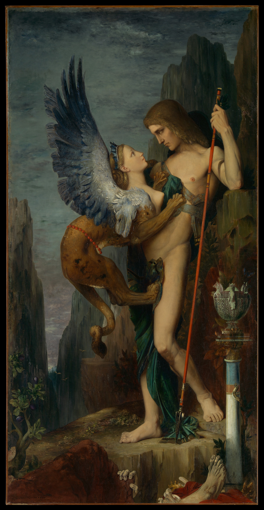

46th ICPC World Championship · Problem W

One of the most remarkable landmarks in Egypt is the Great Sphinx of Giza, a statue depicting a mythical creature with the head of a human, the body of a lion, and the wings of an eagle. Sphinxes were regarded as guardians in Egyptian and Greek mythologies. Probably the most famous sphinx is the one who guarded the Greek city of Thebes. According to myths, when Oedipus tried to enter the city, the sphinx gave him the following riddle: “Which creature has one voice, but has four feet in the morning, two feet in the afternoon, and three feet at night?”
As you might have heard, Oedipus correctly answered, “Man — who crawls on all fours as a baby, then walks on two feet as an adult, and then uses a walking stick in old age.”
In this problem, you meet a different sphinx who gives you a somewhat reversed riddle: “How many legs do an axex, a basilisk, and a centaur have?” While you recognize these as creatures from Egyptian and Greek mythology, you have no clue how many legs each has (except that it is a nonnegative integer). The sphinx sternly instructs you to not touch anything so you are unable to search for the answer on your phone. However, the sphinx allows you to ask her five questions. In each question you can ask the sphinx how many legs some number of these creatures have in total. For instance, you could ask, “How many legs do three basilisks and one axex have in total?” or “How many legs do five centaurs have?” Seems easy enough, you think, but then you remember that sphinxes are tricky creatures: one of the sphinx’s five answers might be an outright lie, and you do not know which one.
Write a program to talk to the sphinx, ask the five questions, and solve the riddle.
There are exactly five rounds of questions. In each question round, you must first write a line containing three space-separated integers a, b, and c (0 ≤ a, b, c ≤ 10), representing the question “How many legs do a axex, b basilisks, and c centaurs have in total?” After the question is asked, an input line containing a single integer r (0 ≤ r ≤ 105) is available on standard input, giving the sphinx’s answer to your question.
After the five rounds of questions, output a line containing three space-separated nonnegative integers a, b, and c, indicating the number of legs of an axex, a basilisk, and a centaur, respectively.
Read
12 13 24 4 8
Write
1 1 1 1 1 1 5 0 1 1 0 0 1 1 0 4 4 4
Read
2023 0 42 2024 0
Write
4 4 4 1 0 0 0 1 0 0 0 1 0 0 0 0 42 2024